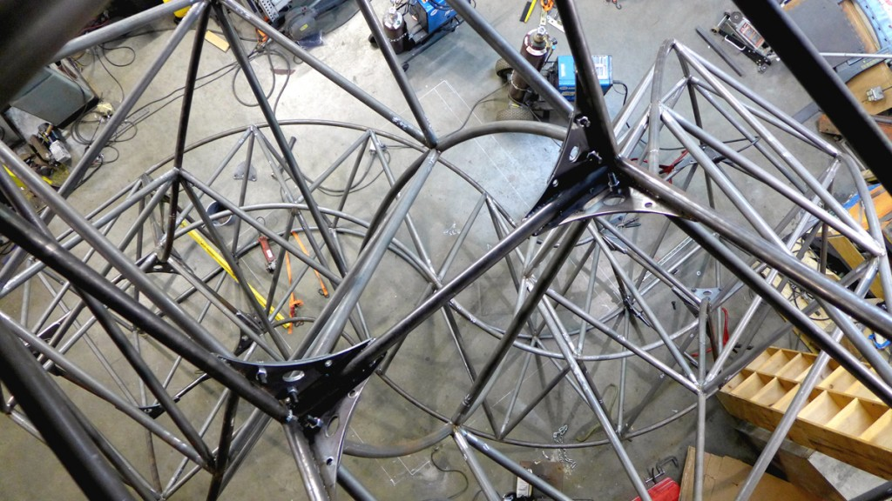

The third arm is in place and the structure has been assembled for the first time. It is now a (nearly) freestanding object. You'll note the stands holding the base of the cubes in this shot. The floor of the shop is not perfect so it still requires some custom stands to secure it while it's being worked on and actually CLIMBED!

Part of what makes this project interesting for me is the ability to interact the piece in a physical way. I'm pretty excited to be one of the first few people that have gotten to go up and into the Penrose Triangle. It's a very cool concept and design but there's only so much you can really get by looking at scale replicas and exploring the 3D models. You get a real sense of it's gorgeous lines when you start walking around it for the first time.
{kind=link}
Predictably, my first question when I walk into the shop and see it standing is "Can I climb it!?" With the all clear I start going up. It's amazing to feel the strength and stability of the triangle while being surrounded by such smooth, winding curves that one doesn't normally associate with words like "rigid" or "safe." The multiple foot holds and places to lean provide assurances all the way up.
{kind=link}
The cube at the apex of the structure is held by arms coming from both sides. It's a bit unnerving at first to see one side of the support twist out from under you on one side, but that's part of the fun. You come to have a quick understanding of the structure by devising climbing strategies along the way.
{kind=link}
I really enjoy seeing the way the arms go out in one direction and then wind down and back in towards the cube at the bottom. It has a crazy roller coaster kind of character from certain angles. It appears as though the arm is leading you up, down and around a bend as you follow it's curves. Very cool to climb up and look around to find those odd Seussian lines.
Having looked at the renderings and the models since the beginning of the project, it's rewarding to actually get to replicate some view that you could only get from the small scale renderings. A top-down view of the 3D print:
The same view from atop the structure:
{kind=link}
As a side note, the precision of Penrose Triangle's construction is evident all around at every weld and every beam's curve. That said, nowhere did it come into such focus for me as it did in seeing how close the very top of it is from the ceiling of the shop. That is a tight fit!
{kind=link}
So there you have it. The project has reached an important milestone but there is still a lot of work to do. The smooth shape and solid renderings make it easy to forget that it takes a lot of little details and printouts (2D and 3D!) to go from a model to a standing structure. A print out on the floor of the shop laying out beam members: 
So far the team has gone from an object in modeling software to the 8" 3D print:
Into this 17' climbable physical THING. Here, Blake and Josh talk about the project's needs and the welding that needs to take place:

So much welding

That's it for now. It's been great watching the progress of the full structure's build. There's still a base that needs to be made and lighting and electronics and and and.... The ability to touch, interact or climb art is what sets Burning Man apart from a typical experience with sculpture and art in general. This particular piece is beautiful in it's own right but the prospect of climbing and observing the Penrose Triangle from all sides is going to be a special experience for anyone who dares scale it. It is very friendly and easy to climb so it will be great to see so many people being able to enjoy that aspect of it as well.
2 Comments